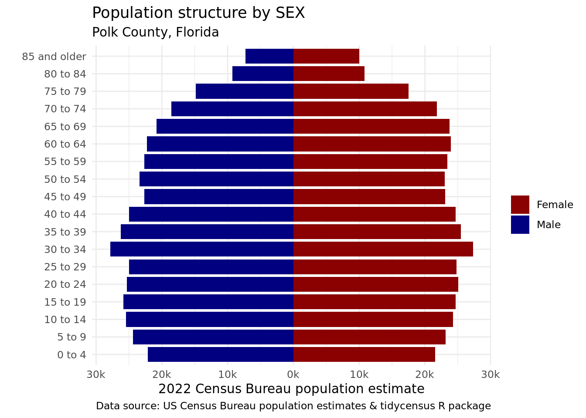

library(tidyverse)
library(tidycensus)
library(plotly)I am working through creating Population Pyramids using the tidycensus package. Also here is another tutorial on Pyramid Plots.
The graph below is copy of the example from the article; the only change is I changed to Polk County Florida, and will add some code comments to help me understand how the code works.
polk <- get_estimates(geography = "county",
product = "characteristics",
breakdown = c("SEX", "AGEGROUP", "HISP"),
breakdown_labels = TRUE,
state = "FL",
county = "Polk")Review the data structure.
dplyr::glimpse (polk)Rows: 114
Columns: 7
$ GEOID <chr> "12105", "12105", "12105", "12105", "12105", "12105", "12105"…
$ NAME <chr> "Polk County, Florida", "Polk County, Florida", "Polk County,…
$ year <int> 2022, 2022, 2022, 2022, 2022, 2022, 2022, 2022, 2022, 2022, 2…
$ SEX <chr> "Male", "Male", "Male", "Male", "Male", "Male", "Male", "Male…
$ AGEGROUP <fct> All ages, All ages, All ages, Age 0 to 4 years, Age 0 to 4 ye…
$ HISP <chr> "Both Hispanic Origins", "Non-Hispanic", "Hispanic", "Both Hi…
$ value <dbl> 389036, 273105, 115931, 22146, 13638, 8508, 24387, 15188, 919…head(polk)# A tibble: 6 × 7
GEOID NAME year SEX AGEGROUP HISP value
<chr> <chr> <int> <chr> <fct> <chr> <dbl>
1 12105 Polk County, Florida 2022 Male All ages Both Hispanic … 389036
2 12105 Polk County, Florida 2022 Male All ages Non-Hispanic 273105
3 12105 Polk County, Florida 2022 Male All ages Hispanic 115931
4 12105 Polk County, Florida 2022 Male Age 0 to 4 years Both Hispanic … 22146
5 12105 Polk County, Florida 2022 Male Age 0 to 4 years Non-Hispanic 13638
6 12105 Polk County, Florida 2022 Male Age 0 to 4 years Hispanic 8508compare <- filter(polk, str_detect(AGEGROUP, "^Age"), #exclude all ages
HISP != "Both Hispanic Origins", #this helps us segement by eth rather than totals
SEX != "Both sexes") %>% #again we want to segement by eth and sex.
mutate(value = ifelse(SEX == "Male", -value, value)) #I think this used for plotting and using the abolute value for the pyramid plot.
ggplot(compare, aes(x = AGEGROUP, y = value, fill = SEX)) +
geom_bar(stat = "identity", width = 1) +
theme_minimal(base_family = "Roboto") +
scale_y_continuous(labels = function(y) paste0(abs(y / 1000), "k")) + #I have no idea what abs is. Is is abreivation or aboslute value.
scale_x_discrete(labels = function(x) gsub("Age | years", "", x)) +
scale_fill_manual(values = c("darkred", "navy")) +
coord_flip() +
facet_wrap(~HISP) +
labs(x = "",
y = "2022 Census Bureau population estimate",
title = "Population structure by Hispanic origin",
subtitle = "Polk County, Florida",
fill = "",
caption = "Data source: US Census Bureau population estimates & tidycensus R package")
Here is how Chat GPT3 Answered my questions.
Lets riff on this and get a Population Pyramid based on just SEX.
non_eth <- filter(polk, str_detect(AGEGROUP, "^Age"), #exclude all ages
HISP == "Both Hispanic Origins", #this helps us segement by eth rather than totals
SEX != "Both sexes") %>% #again we want to segement by eth and sex.
mutate(value = ifelse(SEX == "Male", -value, value)) #I think this used for plotting and using the abolute value for tAgain, review the data and its structure.
dplyr::glimpse (non_eth)Rows: 36
Columns: 7
$ GEOID <chr> "12105", "12105", "12105", "12105", "12105", "12105", "12105"…
$ NAME <chr> "Polk County, Florida", "Polk County, Florida", "Polk County,…
$ year <int> 2022, 2022, 2022, 2022, 2022, 2022, 2022, 2022, 2022, 2022, 2…
$ SEX <chr> "Male", "Male", "Male", "Male", "Male", "Male", "Male", "Male…
$ AGEGROUP <fct> Age 0 to 4 years, Age 5 to 9 years, Age 10 to 14 years, Age 1…
$ HISP <chr> "Both Hispanic Origins", "Both Hispanic Origins", "Both Hispa…
$ value <dbl> -22146, -24387, -25485, -25844, -25352, -24998, -27862, -2627…head(non_eth)# A tibble: 6 × 7
GEOID NAME year SEX AGEGROUP HISP value
<chr> <chr> <int> <chr> <fct> <chr> <dbl>
1 12105 Polk County, Florida 2022 Male Age 0 to 4 years Both Hispani… -22146
2 12105 Polk County, Florida 2022 Male Age 5 to 9 years Both Hispani… -24387
3 12105 Polk County, Florida 2022 Male Age 10 to 14 years Both Hispani… -25485
4 12105 Polk County, Florida 2022 Male Age 15 to 19 years Both Hispani… -25844
5 12105 Polk County, Florida 2022 Male Age 20 to 24 years Both Hispani… -25352
6 12105 Polk County, Florida 2022 Male Age 25 to 29 years Both Hispani… -24998polk_sex <- ggplot(non_eth, aes(x = AGEGROUP, y = value, fill = SEX)) +
geom_bar(stat = "identity", width = .85) +
theme_minimal(base_family = "Roboto") +
scale_y_continuous(labels = function(y) paste0(abs(y / 1000), "k")) + #I have no idea what abs is. Is is abreivation or aboslute value.
scale_x_discrete(labels = function(x) gsub("Age | years", "", x)) +
scale_fill_manual(values = c("darkred", "navy")) +
coord_flip() +
labs(x = "",
y = "2022 Census Bureau population estimate",
title = "Population structure by SEX",
subtitle = "Polk County, Florida",
fill = "",
caption = "Data source: US Census Bureau population estimates & tidycensus R package")
polk_sex
I updated the width of the bars for this plot. I think it looks better and it helps me see the pattern.
I think it may be helpful to make the plot interactive
interactive_plot <- plotly::ggplotly(polk_sex)
interactive_plot